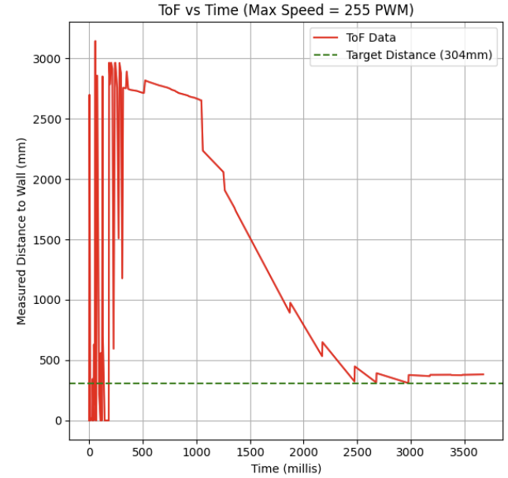

Lab 5: Linear PID and Interpolation
PID Background
The output of a PID controller is given by the following formula acknowledged in class:
\[ u(t) = K_p e(t) + K_i \int e(t) dt + K_d \frac{d}{dt} e(t) \]
Where:
- \( u(t) \) = Control output
- \( e(t) \) = Error (setpoint - measured value)
- \( K_p \) = Proportional gain
- \( K_i \) = Integral gain
- \( K_d \) = Derivative gain
Before beginning this week's lab, I wanted to gain a better understanding of the role that each component of the PID controller plays in the final control output. This understanding would help me make a better informed decision on which components to include, combine, or omit in my final design of implementing a real world PID controller.
A P (Proportional) controller primarily focuses on the present error of the system. The control output is proportional to the current error, with a constant multiplier Kp. This means that a large error results in a large control output, helping to quickly reduce the error. However, a proportional-only controller typically leads to a steady-state error, as it cannot eliminate the error completely.
A PI (Proportional-Integral) controller combines the proportional term with an integral term, which accumulates the error over time. The integral term helps to eliminate the steady-state error by adding a corrective action that grows over time if the error persists. This ensures that the controller can drive the system toward the setpoint even if small errors remain, which would not have been eliminated by the proportional term alone.
Finally, a PID (Proportional-Integral-Derivative) controller adds a derivative term to the PI controller. The derivative term responds to the rate of change of the error, essentially predicting future error trends. This helps to dampen oscillations and reduce overshooting by providing a counteracting force when the error is changing too rapidly.
The PID controller thus combines the advantages of all three components—quick correction of errors (P), elimination of steady-state error (I), and smooth control (D)—to provide a more robust and stable control system.
Prelab
Before beginning this week's lab, I started with modifying my current robot control setup to facilitate faster debugging, remote control and configuration of PID and its parameters, and the addition of a failsafe to shut off the robot's motors in case of a BLE disconnect.
Have the robot controller start on an input from your computer sent over Bluetooth
I began by setting up a flag system to start my PID controller on input from my computer. On the Arduino side, I initialized a global flag called "pid_start", which is initially set to false. I then added commands "START_PID" and "STOP_PID" that I could send from my laptop to the board to toggle this flag. Later in my main loop, I can make PID controller calls conditioned on this flag's status.
Clearly describe how you handle sending and receiving data over Bluetooth. Consider adding code snippets as necessary to showcase how you implemented this on Arduino and Python
To handle sending and receiving data from my PID controlled runs, I first initialized a 2D array in heap memory of a specified size on system startup in a similar approach to my data collection method in Labs 2 & 3.
While PID control is on and there is still available space in the arrays, I track timestamped ToF sensor information and the inputs into my motors and append that data into the data array.
I then isolated sending the data to a separate command called "SEND_DATA" that I could trigger only when I wanted to save the data from a test:
By doing this, I could avoid unnecessary data transmissions from failed tests, and had more control over when data was sent so that I could prepare my notification handler to receive data when data needed to be saved.
To actually receive the data on the Python side, I setup a notification handler similar to in Labs 2 and 3 to parse the tof, pwm, and timestamp data from the retrieved messages
Execute PID control over a fixed amount of time (e.g. 5s) while storing debugging data in arrays.
Putting the flag system and the save/send data functions together, I finalized my main loop to allow remote control over PID for a fixed period of time (data). Additionally, if the Nano ever became disconnected, I wrote a stop motors function to immediately send a duty cycle of 0 to both motor drivers to halt the car.:
Stop motors function :
You can also consider writing a Bluetooth command that lets you update the gains without having to reprogram the Artemis.
Lastly, I implemented a system to remotely set parameters that would factor into my testing (PID gains, Max Speed, Calibration Factor) -- doing this allowed me to minimize the amount of times I would need to connect to my Nano and reupload code between tests.
A snapshot of the commands I could then use to remotely tweak these gains from the Python side is shown below
Lab Tasks
I first started by initializing my ToF sensor input. Due to the constraints of the lab task (stopping within 1ft from a distance of 2-4 meters) I thought it would be a good idea to start with the following parameters:
Range and Sampling Time Discussion
Distance Mode = Long (From Lab 3 data, distance measurements in short mode were unreliable for obstacles beyond 1.2 meters. Long mode provides more accurate readings for distances between 2-4 meters from the starting position.)
Timing Budget = 20 ms (fastest timing budget for Long Ranging mode -- necessary as speed of ToF sensor sampling rate was limiting factor of main loop as discovered in Lab 3.)
Next, knowing that settling on a final design for my PID controller would require a lot of finetuning and was highly dependent on my robot's unique configuration and dynamics, I decided it would be best to start with an iterative approach to building my PID controller.
Starting with the simplest proportional controller, I created a function called p_controller which simply calculates the current error between my robot's distance from the wall and the target distance of 304mm from the wall.
I then wrote a function that could map these into an operable range of values that my motor driver could receive (values between 40(due to deadband) and 255(Max PWM)), and calls the appropriate logic to either drive the car forward, stop, or move in reverse, directly proportional to the output of the p controller.
As you will notice in the pid_to_pwm function, for outputs of my PID controller with values under 40, I run the stop motors function (which just writes a PWM of 0 to the drivers) instead of letting the motors ramp up to some value above 40 to overcome the deadband. I came to this conclusion through multiple trials as I noticed that ramping up the PWM value above deadband to overcome static friction would actually cause excess overshoots and oscillations without ever settling at the setpoint when compared to just stopping. This could likely be due to the lag in ToF sensing time (which directly restricted the rate of my PID control) in proportion to the dynamics of my system. By the time the robot had detected it was moving away from the target and tried to ramp up speed, it had already overshot the setpoint and would do this indefinitely.
Tuning
Due to the presence of so many different factors and variables when tuning (Max Speed, Calibration factor, surface type, etc. ), I figured my best approach would be to follow a heuristic when tweaking my parameters until a desired outcome was achieved.
Following one of the heuristics covered in lecture, I started with an incredibly small proportional term gain of 0.005. I would then gradually increase my gain until I hit oscillation or overshoot, and then reduce by a factor of 2 to 4.
Using a gain of 0.005, CF = 1.8, Max PWM of 100, and on my table setup, the car barely moved.
Looking back, this was to be expected. A gain of 0.005 * 2m (the error from a starting position of 2m away from the wall), would result in a PWM motor input of around 10, well within the deadband of my motors, and thus just have the robot constantly run the stop motors function.
Following the heuristic, I then ramped up the proportional gain to 0.04, and keeping all other parameters the same, I ran the following test and collected the sensor data after:
This time the car was able to accelerate from standstill, but as in the previous test once the error got below the deadband threshold, the car stalled.
Sensor Data (CF = 1.8, Max PWM = 100, KP = 0.04, starting position = 2m):
As the gain was clearly too low from the previous trials, I decided to increase the gain to 0.08. This time, the robot actually overshot its target position and remained approximately 60 mm off from the target, in an area of steady state error.
At this point, if I continued to follow the heuristic, I would have needed to cut the gain by a factor of 2 which would have brought me back to a gain of 0.04. Since I had already tested this gain and seen its result, I deviated from the heuristic a little here by testing a slightly lower gain of 0.07, where I acheived this result:
As can be seen above, the robot stops relatively close to the desired setpoint (the 1ft mark is the right edge of the 1ft tape marker), but after multiple additional trials, it seemed that without any additional control input there is not much I can do about the steady state error without an additional controller component. It was at this point that I decided to add on the integral controller to see if it could help reduce this steady state error.
As mentioned earlier, the addition of the I component was intended to address the consistent steady state error that appeared with my p_controller. The integral term should accumulate error in its errorSum variable, and the longer this error persists, the larger this term will grow, hopefully providing enough output to my robot to adjust to the target position more accurately.
To replace my p_controller function, I created a new function: pi_controller that would continually track the sum of the errror overtime into an integral term and add it to the output of the p_controller.
A snippet of my code looks like this:
I then tuned my PI controller using the same heuristic as before. Starting with very little integral component at a Ki of 0.0005, I actually got the robot to land almost perfectly on target!
Sensor Data (CF = 1.8, Max PWM = 100, KP = 0.07, KI = 0.0005 starting position = 2m):
As this first test was pretty perfectly aligned with the target, I wanted to see what would have happened if I had chosen a larger gain value instead, as well as check if the value I had chosen was just a fluke. Increasing the gain to a Ki of 0.005 (an order of magnitude greater), I got the following results:
The car well overshoots its mark, which confirmed my expectations that too high of an integral gain would cause the integral term to outpace the proportional term causing the robot to overshoot its mark.
Sensor Data (CF = 1.8, Max PWM = 100, KP = 0.07, KI = 0.005 starting position = 2m):
P/I/D discussion (Kp/Ki/Kd values chosen, why you chose a combination of controllers, etc.)
At this point I was pretty happy with the results of my PI controller.
As described earlier, the I term seemed to help remove a lot of the steady state error (when the right gain value was selected) that existed with the p controller alone. The addition of the derivative term could help with dampening the harsh acceleration curve or rapid changes outputted by the proportional controller, but at this point in the lab with the PI controller mostly working, I decided that I wanted to address the sampling rate of my ToF sensors, which through my testing of different gains seemed to be a bigger bottleneck in my PI controller's performance, before adding on a D component or testing different surfaces and distances.
1. Determine the frequency at which the ToF sensor is returning new data.
To determine the frequency of the ToF sensor (and the output of the PID controller that it is bottlenecking), I added some print statements (shown below) to print out each ToF measurement, corresponding PID output, and the measurement time.
From the following results, I calculated an average time between measurements of approximately 120ms or 1/.12 = 8 Hz
2. Change your loop to calulate the PID control every loop, even if there is no new data from the ToF sensor.
Altering my code so that I calculate the PID control regardless of whether the ToF sensor has new data ready, a snippet of my resulting main loop looks like this:
3. How fast is the PID control loop running? Compare this rate to ToF sensor rate.
In the snippet of my serial monitor below, there is on average about 14.2 ms between PID control outputs, or a rate of 1/.0142 = 70Hz. We can also see below that there is a lot of repetition between datapoints as expected as the PID function is still using old ToF data that can only refresh at the slower rate. Compared to the ToF sensor rate, this is almost 9x faster!
4. Rather than use an old datapoint to calulate the PID control, extrapolate an estimate for the car's distance to the wall using the last two datareadings from the ToF sensor.
To fix this recycling of old data, we will use linear interpolation to extrapolate datapoints for times when the ToF sensor data is not ready.
The linear interpolation formula is given by the following equation:
\[ f(x) = f(x_0) + \frac{f(x_1) - f(x_0)}{x_1 - x_0} (x - x_0) \]
Where:
- \( f(x) \) = Interpolated value at \( x \)
- \( x_0, x_1 \) = Known points
- \( f(x_0), f(x_1) \) = Function values at \( x_0 \) and \( x_1 \)
- \( x \) = The point at which we interpolate
To incorporate this formula into my code, I created four new global variables to store data points of \( f(x_0), f(x_1)\) and \( x_0, x_1 \) (the two most recently recorded ToF values and their timestamps) as well as \(x\) (the timestamp that we want to interpolate a distance value for).
I then created a new function interpolated_distance() which, when given these two data points and the current time, would be called to interpolate based on these two most recently recorded points (if they exist) and return an interpolated distance value.
A snippet taken from my final linear interpolation loop looks something like this:
To verify the results of my interpolation function, I sent my collected interpolated data alongside my measured ToF data over BLE for plotting:
As we can see, when a new datapoint from the ToF sensor becomes available, the interpolated value corrects to the new measured value and interpolates off of the newly added point and its prior.
One thing that I noticed from plotting this data was that initially, newly interpolated values are stuck at 0 for all timestamps up until the first two measured points from the ToF sensor. Looking back, this makes sense as the interpolation requires at least two prior data points in order to base future interpolations off of. I can forsee this being a minor issue when using purely interpolated data as input to my PID controller. For the first few iterations of the PID loop, while my ToF sensor builds up data, the interpolated distance will be 0 and my car might stall or actually move backward for the first few milliseconds as it will think it has overshot the target.
I also added several debug statements to my function to print out interpolated values when possible.
As expected, timestamps between our new interpolated measurements run about as fast as the main loop from the previous step-- an average of 20 ms now (likely due to additional print statements and interpolation calculations).
Finally, to conclude the lab, I decided to test the robustness of my new interpolated setup on a different surface and a farther distance, as well as find the max linear speed achievable by my car while still meeting the stopping requirements:
As I had tested on a smooth table before, I wanted to conduct this test on a surface with a higher coefficient of friction, like carpet flooring.
Using a max PWM limit of 255, keeping my proportional gain of 0.07 constant, and tweaking my Ki gain to Ki = 0.00001 (any more and my integral term had enough time to cause massive overshoot) -- (Looking back this could likely be worked around by applying some limit to how large the integral term could get instead of hindering the integral gain by this much) I acheived the following successful run from a distance of about 3 meters:
And below is the output of my sensor readings (CF = 1.8, Max PWM = 255, KP = 0.07, KI = 0.00001 starting position = 3m):
As we can see in the recorded ToF data, the initial interpolated distanc measurements oscillate between 0 and the actual measured distance as the ToF tries to stabilize and interpolate data until 2 full prior measurements from the ToF can be taken.
We can also see that the robot quickly approaches the setpoint and although there is some small steady state error (likely from attenuating my integral term so much) the robot lands pretty close to the setpoint (settling around 380mm)!
To calculate the max linear speed acheived, I saved a comma separated list of timestamped readings from the ToF. Using the plot as a reference, the steepest slope (after the interpolated values stabilizes) is in the jump from datapoints 2653.642 mm to 2236.0 mm which occured at times 1300412.0 ms, 1300423.0 ms (times on the chart are normalized on an initial program time of 1299301.0) respectively. This gives us a distance of around 417 mm travelled in 20 ms or a max linear speed of 20 m/s, which seems a little too fast! -- this could very easily be likely to an outlier reading from the ToF sensor causing a huge jump in the interpolated value, and likely is not reliable for an accurate max linear speed calculation.
Instead, I think a more reasonable approach could be to look at the average linear speed over the duration of the test, which over the span of about 3 seconds, my robot traveled a distance of 3 meters, or a maximum average linear speed of approximately 1 m/s.